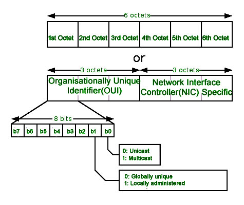
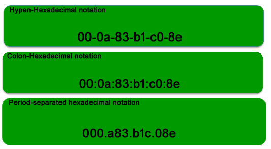
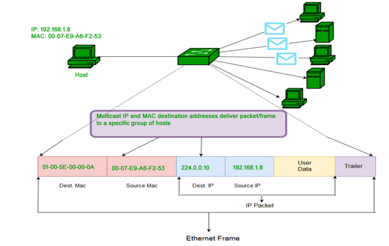
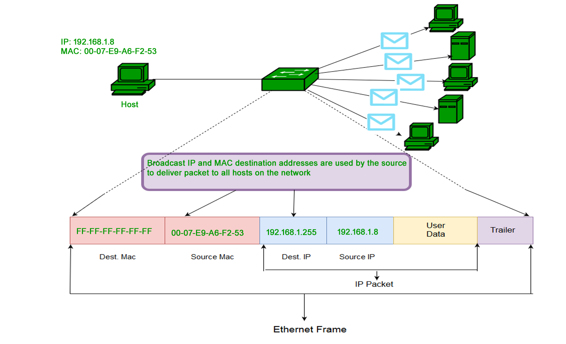

In order to communicate or transfer the data from one computer to another computer we need some address. In Computer Network various types of address are introduced; each works at different layer. Media Access Control Address is a physical address which works at Data Link Layer. In this article, we will discuss about addressing in DLL, which is MAC Address.
Media Access Control (MAC) Address –
MAC Addresses are unique 48-bits hardware number of a computer, which is embedded into network card (known as Network Interface Card) during the time of manufacturing. MAC Address is also known as Physical Address of a network device. In IEEE 802 standard, Data Link Layer is divided into two sublayers –
- Logical Link Control(LLC) Sublayer
- Media Access Control(MAC) Sublayer
MAC address is used by Media Access Control (MAC) sublayer of Data-Link Layer. MAC Address is word wide unique, since millions of network devices exists and we need to uniquely identify each.
Format of MAC Address –
MAC Address is a 12-digit hexadecimal number (6-Byte binary number), which is mostly represented by Colon-Hexadecimal notation. First 6-digits (say 00:40:96) of MAC Address identifies the manufacturer, called as OUI (Organizational Unique Identifier). IEEE Registration Authority Committee assign these MAC prefixes to its registered vendors.
Here are some OUI of well known manufacturers :
CC:46:D6 - Cisco 3C:5A:B4 - Google, Inc. 3C:D9:2B - Hewlett Packard 00:9A:CD - HUAWEI TECHNOLOGIES CO.,LTD
The rightmost six digits represents Network Interface Controller, which is assigned by manufacturer.
As discussed above, MAC address is represented by Colon-Hexadecimal notation. But this is just a conversion, not mandatory. MAC address can be represented using any of the following formats –

Note: Colon-Hexadecimal notation is used by Linux OS and Period-separated Hexadecimal notation is used by Cisco Systems.
How to find MAC address –
Command for UNIX/Linux - ifconfig -a
ip link list
ip address show
Command forWindows OS - ipconfig /all
MacOS - TCP/IP Control Panel
Note – LAN technologies like Token Ring, Ethernet use MAC Address as their Physical address but there are some networks (AppleTalk) which does not use MAC address.
Types of MAC Address –
- Unicast – A Unicast addressed frame is only sent out to the interface leading to specific NIC. If the LSB (least significant bit) of first octet of an address is set to zero, the frame is meant to reach only one receiving NIC. MAC Address of source machine is always Unicast.

- Multicast – Multicast address allow the source to send a frame to group of devices. In Layer-2 (Ethernet) Multicast address, LSB (least significant bit) of first octet of an address is set to one. IEEE has allocated the address block 01-80-C2-xx-xx-xx (01-80-C2-00-00-00 to 01-80-C2-FF-FF-FF) for group addresses for use by standard protocols.

- Broadcast – Similar to Network Layer, Broadcast is also possible on underlying layer( Data Link Layer). Ethernet frames with ones in all bits of the destination address (FF-FF-FF-FF-FF-FF) are referred as broadcast address. Frames which are destined with MAC address FF-FF-FF-FF-FF-FF will reach to every computer belong to that LAN segment.

What is MAC Cloning –
Some ISPs use MAC address inorder to assign IP address to gateway device. When device connects to the ISP, DHCP server records the MAC address and then assign IP address. Now the system will be identified through MAC address. When the device get disconnected, it looses the IP address. If user wants to reconnect, DHCP server checks if the device is connected before. If so, then server tries to assign same IP address (in case lease period not expired). In case user changed the router, user has to inform the ISP about new MAC address because new MAC address is unknown to ISP, so connection cannot be established.
Or the other option is Cloning, user can simply clone the registered MAC address with ISP. Now router keeps reporting old MAC address to ISP and there will be no connection issue.
References –
MAC address – Wikipedia
RFC 7042 tools.